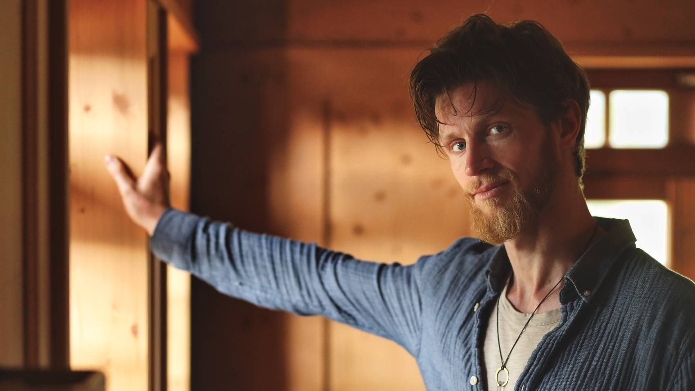
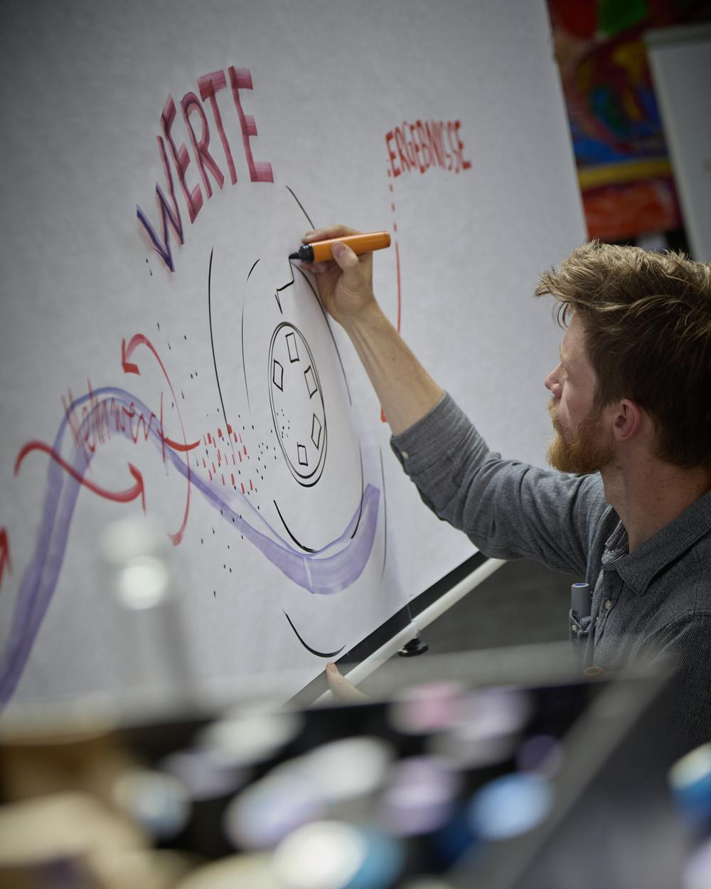

Gespräch, ein live gezeichnetes Bild, die Gene Keys als Landkarte und Begleitung auch zwischen den Terminen.
Du bringst dein Anliegen mit: eine Frage, eine Entscheidung, ein Muster, das immer wiederkommt, oder ein Gefühl von Stillstand, das du nicht benennen kannst.
Was gerade schwer ist, ist das Material. Es muss nicht weg. Es verändert sich, wenn es in der Tiefe gesehen wird, vor allem von dir.
Während wir sprechen, entsteht auf Papier ein Bild: deine Situation, deine Kräfte, dein nächster Schritt. Oft taucht dabei eine Metapher auf, die greifbar macht, was vorher diffus war, und aus ihr eine Lösung, auf die du allein nicht gekommen wärst.
Erkenntnis allein reicht selten. Deshalb übersetzen wir, was sich zeigt, in dein Leben: in kleine, konkrete Schritte und Werkzeuge für deinen Alltag. Und ich bleibe da. Zwischen den Terminen bin ich per Telefon oder Telegram erreichbar, für die Momente, in denen etwas aufgeht oder feststeckt. Wir fallen alle immer wieder in unsere Muster. Was den Unterschied macht, ist jemand, der dranbleibt.
Ich halte den Raum. Den Schritt gehst du selbst, aber nicht allein.
Online, telefonisch oder vor Ort. Wir klären, worum es geht und ob es zwischen uns passt. Unverbindlich. Wenn es nicht passt, sage ich das auch.
Erstgespräch buchenIch erstelle dein Gene-Keys-Profil aus Geburtsdatum, Geburtszeit und Geburtsort und schaue es mir in Ruhe an. So steigen wir ohne Umwege in dein Anliegen ein.
90 Minuten. Wir sprechen, und auf dem Papier entsteht ein Bild. Du musst nichts vorbereiten außer der Frage, die dich gerade beschäftigt.
Du nimmst das Blatt mit. Es arbeitet weiter, auch wenn du nichts weiter damit tust. Manches zeigt sich erst Tage später, wenn das Blatt irgendwo bei dir hängt.
Drei Termine im Abstand von zwei bis drei Wochen. Wir können Dinge nicht sofort ändern, aber wir können einen Boden schaffen, auf dem sie gut wachsen. Der Abstand gibt dem, was in einer Session aufgeht, Zeit, sich zu setzen.
Ein Integrations-Call von 15 Minuten, dazu Erreichbarkeit per Telefon oder Telegram. Gehört werden, eine Idee, ein Kontakt, gemeinsames Dranbleiben.
Drei Bilder, die nebeneinander zeigen, wie sich dein Anliegen von Termin zu Termin verändert hat.
Ein längerer Bogen mit Raum für Pausen und für das, was sich nicht planen lässt. Geeignet, wenn es um ein tiefes Muster geht, um eine Beziehung, deine Arbeit oder eine Lebensphase im Umbruch.
Zweimal 15 Minuten zwischen den Terminen, dazu durchgehende Erreichbarkeit. So wird aus einzelnen Terminen ein gemeinsamer Weg.
Eine Reihe von Bildern, die zusammen eine Landkarte ergeben. Du hältst etwas in der Hand, das zeigt, wie weit du gegangen bist.
Alle Preise inkl. 7 % MwSt. Das Erstgespräch ist kostenlos.
Das, was alles andere trägt. Ich bin ganz da, ohne zu bewerten und ohne etwas an dir verbessern zu wollen. Ich kann bleiben, auch in der Stille und im Nichtwissen, bis der richtige Impuls kommt.

Ich zeichne live mit, während wir sprechen, und höre auf mehreren Ebenen zu: auf Fakten, auf Gefühle und auf das, was zwischen den Zeilen liegt. So kommen Bilder aufs Papier, die du nicht ausgesprochen hast und die trotzdem stimmen.
Manchmal stellen wir auf dem Papier auf, wer in dir mitredet: der Teil, der will, der Teil, der bremst, der Teil, der Angst hat. Wenn sie sichtbar nebeneinanderstehen, können sie miteinander in Kontakt kommen.
Eine Landkarte dafür, wie du gemeint bist. Sie zeigt, wo deine Schatten liegen und welches Geschenk in ihnen steckt. Wir nutzen sie, wo sie hilft, und lassen sie weg, wo sie nicht passt. Mehr dazu weiter unten.
Das richtige Timing ist oft der Schlüssel. Was gerade schwierig ist, ist nicht im Weg, es ist Material und Ausgangspunkt. Wir schauen es ohne Eile an, Schritt für Schritt, bis du selbst siehst, was es dir zeigen will.
Oft können wir die Dinge nicht ändern, aber wir können die Bedingungen ändern. Was du über dich weißt, weißt du besser als ich. Meine Aufgabe ist, einen guten Boden zu schaffen, auf dem du es sehen kannst. Ich bin kein Therapeut und arbeite nicht heilkundlich.
Die Gene Keys sind ein poetisches Weisheitssystem von Richard Rudd. Aus deinem Geburtsdatum, deiner Geburtszeit und deinem Geburtsort entsteht ein Profil aus 64 Archetypen, abgeleitet aus dem I Ching. Es ist kein fixes Urteil, wie du bist, sondern eine Landkarte. Sie gibt dir kontemplative Anregungen, wo in deinen Schatten deine Gaben und deine göttliche Essenz liegen.
Das Herz der Gene Keys ist eine Haltung: Was da ist, ist der Ausgangspunkt. In jedem Schatten liegt ein Geschenk. Statt darüber nachzugrübeln, kontemplieren wir es durch das Leben selbst: Wo taucht das, was im Profil steht, in deinem Alltag auf?
Seit Jahren arbeite ich mit den Gene Keys, und sie lassen mich nicht los. Zwei Schlüssel begleiten mich besonders. Der 54. zeigt mir, wo ich schneller sein will, als das Leben ist, und wie ich zurück in meinen eigenen Rhythmus finde. Der 59. führt von der Unehrlichkeit in die Intimität. Ihn erlebe ich in meinen Räumen immer wieder: Wo Menschen sich ehrlich zeigen, entsteht Nähe.
Die vielen Zahlen können am Anfang verwirren. In der Begleitung übersetze ich sie in deine Sprache.
The Sage’s Golden Path Retreats
Wenn du die Gene Keys selbst erkunden willst, führt der Golden Path in drei Stufen durch dein Profil: wie du gemeint bist (Activation Sequence), deine Prägungen und Beziehungen (Venus Sequence) und dein Wirken in der Welt (Pearl Sequence). Im Januar 2027 startet das Pearl Retreat. Ich werde dabei sein. Wenn du magst, begleite ich dich auf dem Weg.
Das sind Empfehlungslinks: Wenn du darüber buchst, erhalte ich eine kleine Provision.
Ich bin kein Therapeut, kein Arzt und kein Heilpraktiker. Ich stelle keine Diagnosen und arbeite nicht heilkundlich. Wenn du Behandlung brauchst, sage ich dir das und helfe gern, die richtige Stelle zu finden.
Es gibt keine Garantie, dass du mit einer Erkenntnis nach Hause gehst. Manchmal passiert viel, manchmal wenig, manchmal zeigt sich etwas erst Wochen später.
Aber ich gehe ihn mit. Was du daraus machst, bleibt bei dir. Die Teilnahme an allem, was ich anbiete, geschieht in Eigenverantwortung.
Ein Gespräch zu zweit, bei dem live ein Bild entsteht (Graphic Recording), mit den Gene Keys als Landkarte. In Freiburg vor Ort oder online. Eine Session dauert 90 Minuten, das Erstgespräch ist kostenlos.
Ich nenne es Begleitung. Ich bringe Werkzeuge mit, das Zeichnen, die Gene Keys und die Arbeit mit inneren Anteilen, aber kein festes Programm. Es geht darum, dass du dich klarer siehst und das, was du siehst, in dein Leben bringst. Ich stelle keine Diagnosen und arbeite nicht therapeutisch.
Nicht im Sinn eines Readings, bei dem dir jemand dein Profil vorliest und deutet. Ich stelle dein Profil vorab als Landkarte zusammen, und in der Session schauen wir gemeinsam, welcher Gene Key zu deinem Anliegen passt. Du liest mit.
Beide Systeme arbeiten mit deinen Geburtsdaten und den 64 Hexagrammen des I Ching. Human Design beschreibt daraus vor allem ein Modell aus Typ und Strategie. Die Gene Keys laden dazu ein, die Muster kontemplativ zu erkunden und in jedem Schatten die Gabe zu finden. Ich arbeite mit den Gene Keys.
Dann arbeiten wir mit dem, was da ist. Ein Teil des Profils hängt an der Uhrzeit, der Kern aber nicht.
Das ist die häufigste Ausgangslage. Wir schauen, was sich im Moment zeigt. Meistens wird es schnell klar.
Dann lassen wir sie weg. Das Gespräch und das Bild funktionieren auch ohne.
Ja. Ich zeichne so, dass du über Video mitverfolgen kannst, und schicke dir das Bild danach zu.
Nein. Ich bin kein Therapeut und arbeite nicht heilkundlich. Es geht um Selbsterkenntnis, Orientierung und Umsetzung, nicht um Behandlung. Wenn du therapeutische Unterstützung brauchst, sage ich dir das und helfe gern, die richtige Stelle zu finden.